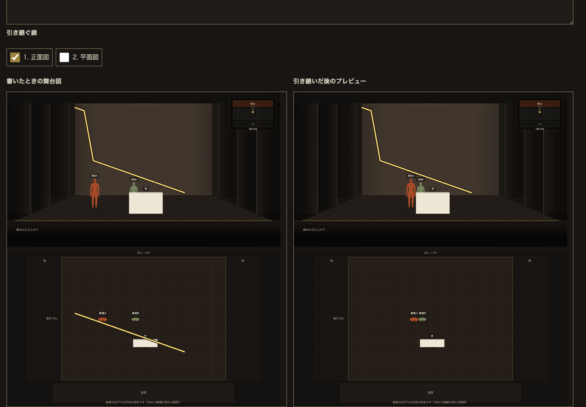
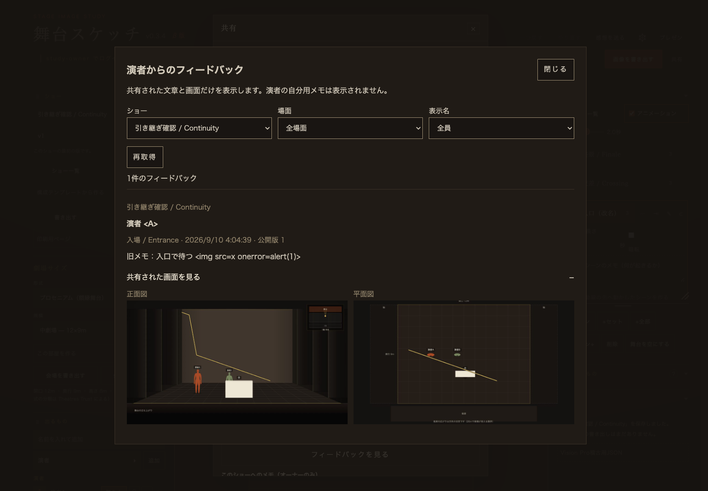
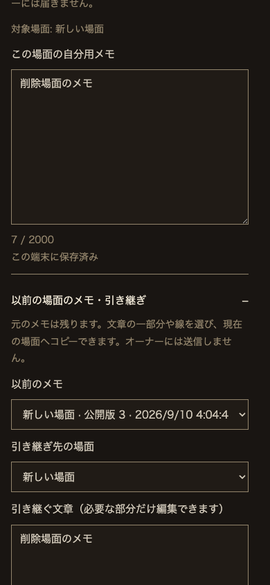

2026年9月10日 · ローカル実装・確認済み · 本番未デプロイ
更新後も、演者のメモを残す
共有モーダルから開く受信一覧と、過去の文章・線を選んで引き継ぐ画面を実装。本家の共通書体・配色を使用します。
実装した利用者体験
- オーナー：共有 → 演者事前学習リンク → フィードバックを見る。全ショー／ショー／場面／表示名で絞り込み、投稿者名・場面・日時・公開版・本文・送信時の正面図と平面図を確認できます。
- 演者：通常の公開更新は同じリンク。場面IDと図の内容が同じならメモを継続。名前や順番では別場面へ自動で移しません。
- 図の変更時は以前の文章・線を残し、新しい図への誤った重ね合わせを避けます。削除された場面のメモも「以前の場面のメモ・引き継ぎ」から開けます。
- 旧図と引き継ぎ先を比較し、文章の一部分と線1本ずつを選んでコピー。原本と、コピー先にあった内容も履歴へ残します。追加・分割・統合した場面へも任意にコピーできます。
- 引き継ぎは個人メモの操作。オーナーへ届くのは「この画面をオーナーへ共有」を押した内容だけです。
- 同じショーへの新しい招待では、サーバーが確認したノートIDで再接続。従来のtoken別の端末保存は消さずに移行します。別オーナーの同名ショーは混ぜません。
本体index.htmlと生成される単独ベータstage.htmlの双方に搭載。公開体験版try.htmlにはオーナー管理を追加していません。
保存・認可・上限
既存のStudyLinks Durable Objectに過去の公開JSONをチャンク保存し、公開更新と同じトランザクションで確定します。過去版のGETも現在の有効な閲覧トークンを検証し、無効化後は最新・旧版とも共通404。更新・メモ一覧・画像・無効化は従来どおりサーバーで作成者一致を検証します。受信一覧は既存のオーナーAPIを使用し、未共有ノートAPIを呼びません。
匿名ベータの個人メモはブラウザ内。アカウント方式では本人専用StudyReaderAccountへ履歴とコピー元も同期します。保存版内の線の順番で個別に選択し、履歴にはID・場面ID・公開版・日時を保持。保存上限で原本を自動削除しません。
- 過去の公開版：1リンク50版・32 MiB。上限では次の更新を拒否し、公開内容とメモを維持。
- 個人履歴：1場面32件。本文2000字・線64本・1本512点。端末／アカウントの既存保存サイズ上限も継続。
- 閲覧・過去版・メモAPI：private, no-store。IP・UAの永続保存、ショーやメモの外部解析送信は追加していません。
以前の舞台図も招待リンクの受取人が見られることを発行側へ明示しています。今回より前に上書きされ、保存されていなかった旧図は復元できません。メモに旧図の識別情報がない場合も、原本を残して選択による引き継ぎにします。
通常の更新には「公開内容を更新」を使います。無効化・再発行・完全削除は別操作です。再発行時に受信メモを削除する既存の確認動作は変えていません。無効化した旧トークンから旧図を取得することもできません。
テストと結果
- 関連Node・Worker・ゲスト権限・リアルタイム共有を含む全Nodeテスト：877 / 877成功。
- 実SQLiteの公開内容・旧版・共有メモ・再起動：28 / 28成功。
- 既存リアルタイム共有の実Worker接続：13 / 13成功。
- 実SQLiteの演者アカウント・履歴・競合・認可：15 / 15成功。
- Chromeで発行→描画→共有→更新→履歴コピー→受信一覧→無効化：7グループ成功、pageerror 0。
- JS14ファイルの構文、build_stage.py --check、build_public.py --check、git diff --check：成功。
- design-lint（390×844 / 1440×900）：NG0 / WARN0 / 測定不可0。本文最悪5.02:1、44px未満0。
新規テストでは削除場面、部分コピー、履歴上限、旧図の読み取り専用性、無効化、所有者分離、再発行後のノート対応、読み上げ用IDの衝突を検証しています。
実行コマンド
node --test tests/*.test.mjs STUDY_MINIFLARE=/Users/arata/.npm/_npx/32026684e21afda6/node_modules/miniflare/dist/src/index.js node tools/study-runtime-check.mjs STUDY_MINIFLARE=/Users/arata/.npm/_npx/32026684e21afda6/node_modules/miniflare/dist/src/index.js node tools/study-reader-runtime-check.mjs STUDY_BASE=http://127.0.0.1:8837 STUDY_PLAYWRIGHT=/Users/arata/.npm/_npx/e41f203b7505f1fb/node_modules/playwright/index.mjs node tools/study-continuity-browser-check.mjs python3 build_stage.py --check python3 build_public.py --check git diff --check
Nodeログ · Workerログ · 同期ログ · ブラウザ結果 · デザイン実測
ブラウザテストは合成リンクを発行します。繰り返す際は専用の新しいポート・保存先を使い、利用者の保存先を使わないでください。初期試行のfailure.pngは診断用で、最終判定はresult.jsonと成功ログです。
ローカル画面で確認した状態
日本語・英語の演者画面を390×844、844×390、768×1024、1440×1000で確認。PCの舞台図全幅・縦並び、44px操作域、文字入力、旧図と新図、コピー後の再読み込み、横はみ出しなしを確認しました。オーナーの英語版もCodex内ブラウザで受信一覧を開き、読み上げ名・Tab移動・2pxフォーカス・最小44pxを確認しています。
元の8802リンクをCodex内ブラウザで再読み込みし、「無題のショー」「公開版1」と履歴欄の空状態を確認。サーバー再起動前後で公開JSONのSHA-256・公開版・更新日時が一致しました。
旧図と引き継ぎ先の比較

オーナーの受信一覧

スマートフォン相当の縦画面

未確認の実機項目
- iPhone Safari／iPad Safari実機での指・ペンの書き味、回転、画面キーボードとの干渉、バックグラウンド復帰。
- 実ネットワークでの端末間同期・Googleログイン・本番Cloudflareの動作。ベータ匿名メモは端末間同期しません。
変更したファイル
この継続作業で編集した既存20ファイルと、新規の実装・テスト3ファイル：
README.mdbuild_study.pydesign/TOKEN_SHEET_study-links_2026-09-09.mdindex.htmlstage-study-owner.jsstage-study-private.jsstage-study-sync.jsstage-study-viewer.jsstage-study.cssstage-sw.jsstage.htmlstudy-frame.htmlstudy-links.jsstudy-reader-account.jsstudy.htmltests/stage-manual-help.test.mjstests/stage-session-shelve.test.mjstests/study-links.test.mjstools/study-reader-runtime-check.mjstools/study-runtime-check.mjsstage-study-continuity.jstests/study-continuity.test.mjstools/study-continuity-browser-check.mjs
加えて、この確認記録とcontinuity-qa/の検証資料を追加。index.htmlを正本としてstage.htmlとstudy-frame.htmlを生成しました。
着手時の1785ファイルと照合し、上の対象以外の1765ファイルはハッシュ一致、消えたファイルは0。元からあったstyle.css・stage-sketch.js・worker.js・wrangler.toml等の差分は保持しました。無関係な作業の巻き戻し・上書きは行っていません。照合結果
本番適用に必要な設定
今回の継続機能による新しいDurable Object／migration追加はありません。事前学習機能を初めて適用する環境には、既存wrangler.tomlのSTUDY_LINKS / v3-study-linksと、STUDY_READER_AUTH・STUDY_READER_ACCOUNTS / v4-study-reader-accountsが必要です。本番の適用状況は未確認です。
- index.htmlからの生成と公開ビルド検査を通し、新しいstage-study-continuity.jsを含めて配布資源を用意する。Workerの公開許可は明示ファイルだけ。
- 既存DO・migration・認証設定を保ったままCloudflare設定を確認する。ベータの匿名閲覧はSTAGE_BETA_ACTIVE=trueとSTUDY_ALLOW_ANONYMOUS=true。本番でローカル演者ログインを有効化しない。
- 本人の公開承認を得てからデプロイし、実際の別利用者・失効・旧版・端末保存を本番で確認する。
commit・push・Cloudflareデプロイ・公開・外部送信・秘密情報登録はしていません。
直接確認する
編集画面を開く → 画像を書き出す隣の「共有」 → 演者事前学習リンク → 「フィードバックを見る」。編集画面は再読み込みすると最新UIになります。
8802は同じ保存先で起動中。停止した場合だけ次のコマンドを使ってください。ローカル確認用のオーナーはstudy-owner / local-study-ownerです。
cd "/Users/arata/Library/Mobile Documents/com~apple~CloudDocs/claude code files/show-creative-ideas/shosai-app" STUDY_ALLOW_ANONYMOUS=true STUDY_PORT=8802 STUDY_PERSIST=/tmp/study-casual-local-20260910 STUDY_MINIFLARE=/Users/arata/.npm/_npx/32026684e21afda6/node_modules/miniflare/dist/src/index.js node tools/study-preview.mjs
この認証情報は合成ローカル確認用。本番アカウントや秘密情報の登録ではありません。